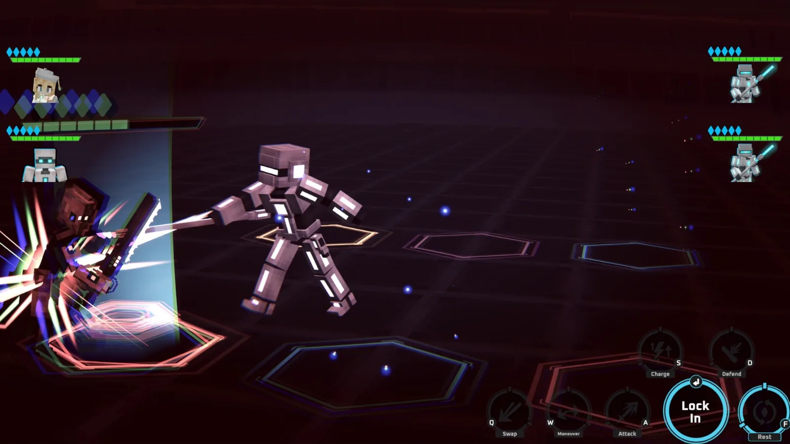

I design things people use, then watch where they get stuck.
I've been designing for real users since I was a kid building Minecraft maps for my best friend. Since then I've shipped Minecraft add-ons with 3.6M+ downloads, grown a YouTube channel to 64K+ subscribers, and designed a tactics game, a receipt-splitting app, and a startup's brand. These case studies show the mockups, the feedback, and the fixes behind each one.
Selected work
Simultaneous-Turn Tactics UI
Uncoded Resolve
The HUD, icons, and color system for a tactics game where both sides move at once, and the tutorial players couldn't close.

Mobile Usability Redesign
Eezy Receipt
A drag-only MVP testers couldn't figure out, redesigned into a split anyone can finish.

B2B Workflow & Brand Identity
Hedron³
A logo, business card, and a five-step guided workflow for the startup I co-founded.

Game UX & Distribution for 3.6M+ Players
Warden Creations
In-game tooltip UX, 17.7% peak CTR thumbnails, and shipping updates to 3.6M+ players.

About
I'm a third-year Computer Science student at UC Santa Barbara, and I work where design meets engineering. I work on the Daily Nexus's native iOS and Android apps, and I co-founded Hedron³, a two-person startup automating export paperwork.
Most of my design sense comes from shipping to a large audience and reading what came back: 1,100+ comment replies, a 6,000-member Discord, and a running list of player suggestions that shaped every update. I care about elegant design: only what's necessary, grounded in conventions people already understand.
I haven't studied in a design program or run a formal usability study yet. Learning those methods from experienced designers and researchers is what I want next.
Toolkit
Design
3D & Motion
Front End
Native & Games
Elsewhere
- Emailleifengchen123@gmail.com
- LinkedInin/leifengchen
- GitHubRedstoneweewee
- YouTube@warden-creations
Key design moments
Pivotal experiments, usability fixes, and architectural breakthroughs across each project